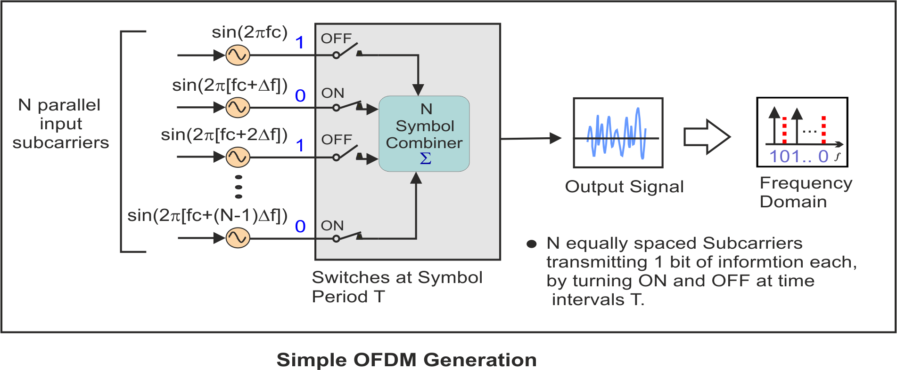
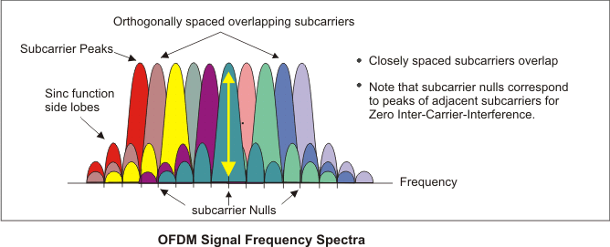
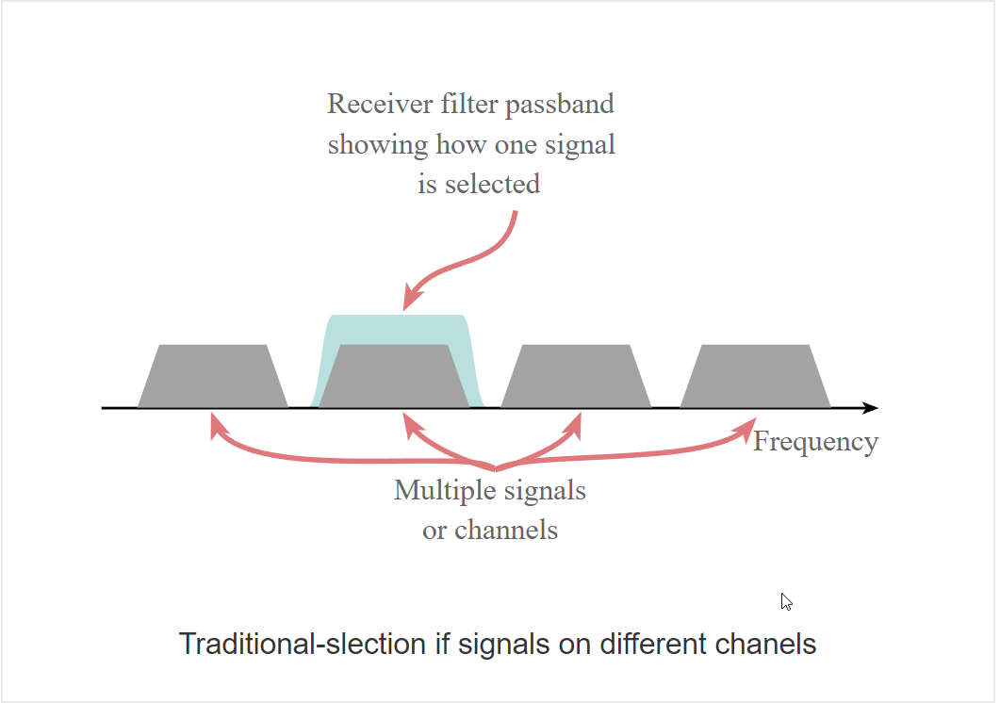
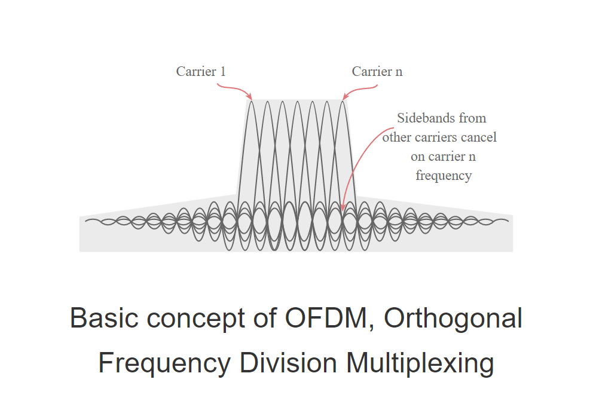
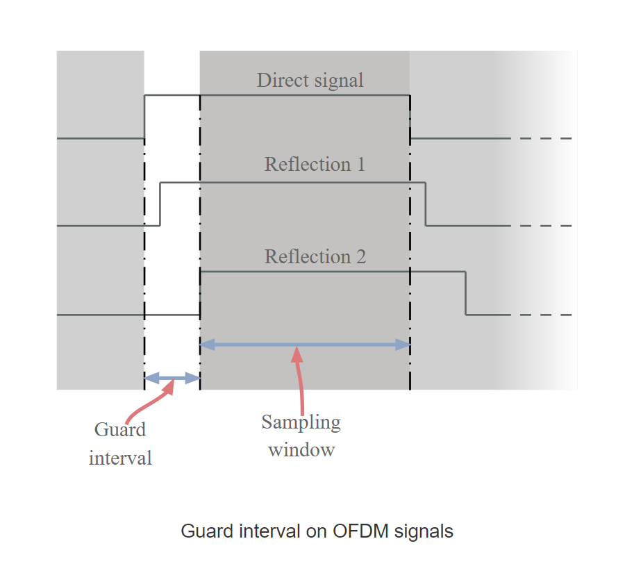
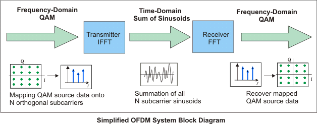

Dr. D.Y Patil Institiute Of Technology ,Pimpri(411018)
Theory (OFDM)
What is OFDM: Orthogonal Frequency Division Multiplexing
OFDM, Orthogonal Frequency Division Multiplexing is a form of signal waveform or modulation that provides some significant advantages for data links.
Accordingly, OFDM, Orthogonal Frequency Division Multiplexing is used for many of the latest wide bandwidth and high data rate wireless systems including Wi-Fi, cellular telecommunications and many more.
The fact that OFDM uses a large number of carriers, each carrying low bit rate data, means that it is very resilient to selective fading, interference, and multipath effects, as well providing a high degree of spectral efficiency.
Early systems using OFDM found the processing required for the signal format was relatively high, but with advances in technology, OFDM presents few problems in terms of the processing required.
The following figure illustrates the main concepts of an OFDM signal and the inter-relationship between the frequency and time domains. In the frequency domain, multiple adjacent tones or subcarriers are each independently modulated with complex data. An Inverse FFT transform is performed on the frequency-domain subcarriers to produce the OFDM symbol in the time-domain. Then in the time domain, guard intervals are inserted between each of the symbols to prevent inter-symbol interference at the receiver caused by multi-path delay spread in the radio channel. Multiple symbols can be concatenated to create the final OFDM burst signal. At the receiver an FFT is performed on the OFDM symbols to recover the original data bits.
Understanding OFDM
Simple Analog OFDM system Implementation
We will use a simple analog based implementation to show the basic principles of generating an OFDM signal. In this simple OFDM system there are N sinusoidal input signals. Each subcarrier transmits one bit of information (N bits total) as indicated by its presence or absence in the output spectrum. The frequency of each subcarrier is selected to form an orthogonal signal set. These frequencies are also known at the receiver for signal recovery. Note that the output is updated at a periodic interval T that forms the symbol period. To maintain orthogonality, T must be the reciprocal of the subcarrier spacing.
Understanding Orthogonality – The Importance of Orthogonally Spaced Subcarriers?
The OFDM signal can be described as a set of closely spaced FDM subcarriers. In the frequency domain, each transmitted subcarrier results in a sinc function spectrum with side lobes that produce overlapping spectra between subcarriers, see "OFDM Signal Frequency Spectra" figure below. This results in subcarrier interference except at orthogonally spaced frequencies. At orthogonal frequencies, the individual peaks of subcarriers all line up with the nulls of the other subcarriers. This overlap of spectral energy does not interfere with the system’s ability to recover the original signal. The receiver multiplies (i.e., correlates) the incoming signal by the known set of sinusoids to recover the original set of bits sent.
How OFDM works?
OFDM is a form of multicarrier modulation. An OFDM signal consists of a number of closely spaced modulated carriers. When modulation of any form - voice, data, etc. is applied to a carrier, then sidebands spread out either side. It is necessary for a receiver to be able to receive the whole signal to be able to successfully demodulate the data. As a result when signals are transmitted close to one another they must be spaced so that the receiver can separate them using a filter and there must be a guard band between them. This is not the case with OFDM. Although the sidebands from each carrier overlap, they can still be received without the interference that might be expected because they are orthogonal to each another. This is achieved by having the carrier spacing equal to the reciprocal of the symbol period.
To see how OFDM works, it is necessary to look at the receiver. This acts as a bank of demodulators, translating each carrier down to DC. The resulting signal is integrated over the symbol period to regenerate the data from that carrier. The same demodulator also demodulates the other carriers. As the carrier spacing equal to the reciprocal of the symbol period means that they will have a whole number of cycles in the symbol period and their contribution will sum to zero - in other words there is no interference contribution.
One requirement of the OFDM transmitting and receiving systems is that they must be linear. Any non-linearity will cause interference between the carriers as a result of inter-modulation distortion. This will introduce unwanted signals that would cause interference and impair the orthogonality of the transmission.
In terms of the equipment to be used the high peak to average ratio of multi-carrier systems such as OFDM requires the RF final amplifier on the output of the transmitter to be able to handle the peaks whilst the average power is much lower and this leads to inefficiency. In some systems the peaks are limited. Although this introduces distortion that results in a higher level of data errors, the system can rely on the error correction to remove them.
Data on OFDM
The traditional format for sending data over a radio channel is to send it serially, one bit after another. This relies on a single channel and any interference on that single frequency can disrupt the whole transmission.
OFDM adopts a different approach. The data is transmitted in parallel across the various carriers within the overall OFDM signal. Being split into a number of parallel "substreams" the overall data rate is that of the original stream, but that of each of the substreams is much lower, and the symbols are spaced further apart in time.
This reduces interference among symbols and makes it easier to receive each symbol accurately while maintaining the same throughput.
The lower data rate in each stream means that the interference from reflections is much less critical. This is achieved by adding a guard band time or guard interval into the system. This ensures that the data is only sampled when the signal is stable and no new delayed signals arrive that would alter the timing and phase of the signal. This can be achieved far more effectively within a low data rate substream.
The distribution of the data across a large number of carriers in the OFDM signal has some further advantages. Nulls caused by multi-path effects or interference on a given frequency only affect a small number of the carriers, the remaining ones being received correctly. By using error-coding techniques, which does mean adding further data to the transmitted signal, it enables many or all of the corrupted data to be reconstructed within the receiver. This can be done because the error correction code is transmitted in a different part of the signal.
Simple Digital OFDM system Implementation using FFT transforms
The concepts used in the simple analog OFDM implementation can be extended to the digital domain by using a combination of Fast Fourier Transform (FFT) and Inverse Fast Fourier Transform (IFFT) digital signal processing. These transforms are important from the OFDM perspective because they can be viewed as mapping digitally modulated input data (data symbols) onto orthogonal subcarriers. In principle, the IFFT takes frequency-domain input data (complex numbers representing the modulated subcarriers) and converts it to the time-domain output data (analog OFDM symbol waveform).
In a digitally implemented OFDM system, the input bits are grouped and mapped to source data symbols that are a complex number representing the modulation constellation point (e.g., the BPSK or QAM symbols that would be present in a single subcarrier system). These complex source symbols are treated by the transmitter as though they are in the frequency-domain and are the inputs to an IFFT block that transforms the data into the time-domain. The IFFT takes in N source symbols at a time where N is the number of subcarriers in the system. Each of these N input symbols has a symbol period of T seconds. Recall that the output of the IFFT is N orthogonal sinusoids. These orthogonal sinusoids each have a different frequency and the lowest frequency is DC.
Key features of OFDM
The OFDM scheme differs from traditional FDM in the following interrelated ways:
- Multiple carriers (called subcarriers) carry the information stream
- The subcarriers are orthogonal to each other.
- A guard interval is added to each symbol to minimize the channel delay spread and intersymbol interference.
OFDM advantages & disadvantages
OFDM advantages
OFDM has been used in many high data rate wireless systems because of the many advantages it provides.
- Immunity to selective fading: One of the main advantages of OFDM is that is more resistant to frequency selective fading than single carrier systems because it divides the overall channel into multiple narrowband signals that are affected individually as flat fading sub-channels.
- Resilience to interference: Interference appearing on a channel may be bandwidth limited and in this way will not affect all the sub-channels. This means that not all the data is lost.
- Spectrum efficiency: Using close-spaced overlapping sub-carriers, a significant OFDM advantage is that it makes efficient use of the available spectrum..
- Resilient to ISI: Another advantage of OFDM is that it is very resilient to inter-symbol and inter-frame interference. This results from the low data rate on each of the sub-channels.
- Resilient to narrow-band effects: Using adequate channel coding and interleaving it is possible to recover symbols lost due to the frequency selectivity of the channel and narrow band interference. Not all the data is lost.
- Simpler channel equalisation: One of the issues with CDMA systems was the complexity of the channel equalisation which had to be applied across the whole channel. An advantage of OFDM is that using multiple sub-channels, the channel equalization becomes much simpler.
OFDM disadvantages
Whilst OFDM has been widely used, there are still a few disadvantages to its use which need to be addressed when considering its use.
- High peak to average power ratio: An OFDM signal has a noise like amplitude variation and has a relatively high large dynamic range, or peak to average power ratio. This impacts the RF amplifier efficiency as the amplifiers need to be linear and accommodate the large amplitude variations and these factors mean the amplifier cannot operate with a high efficiency level.
- Sensitive to carrier offset and drift: Another disadvantage of OFDM is that is sensitive to carrier frequency offset and drift. Single carrier systems are less sensitive.